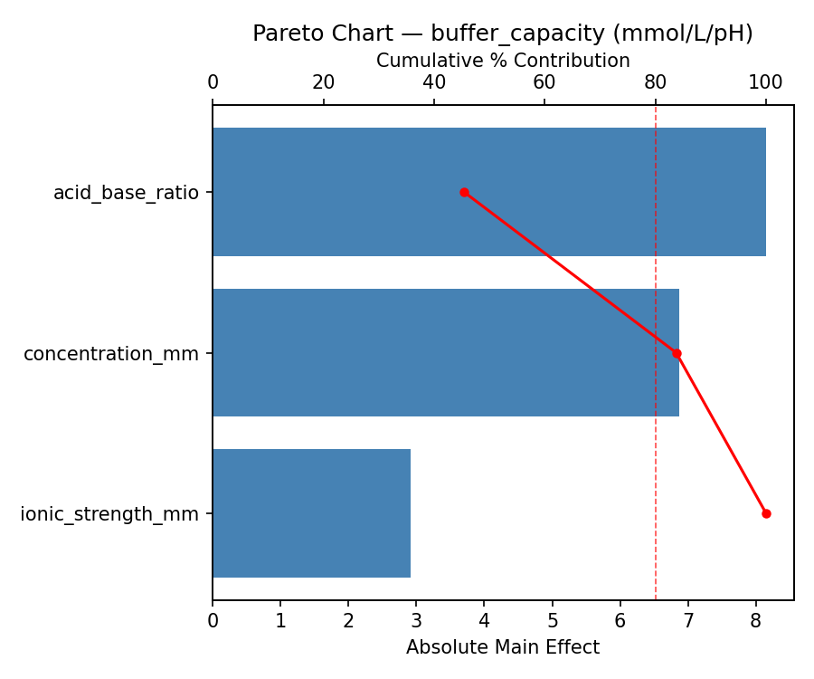
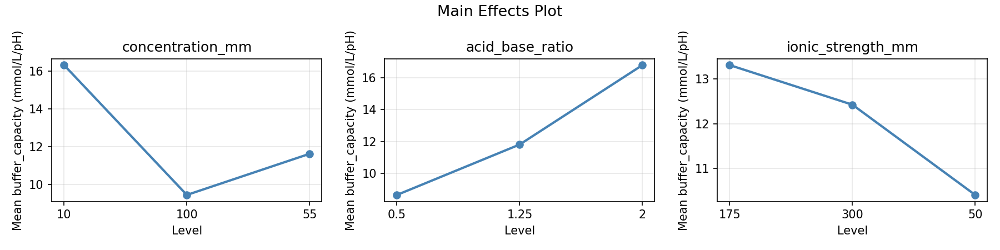
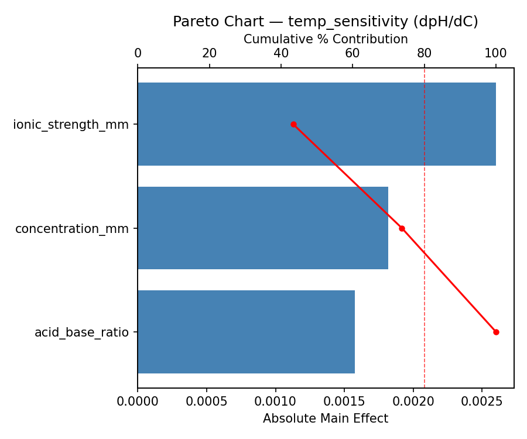
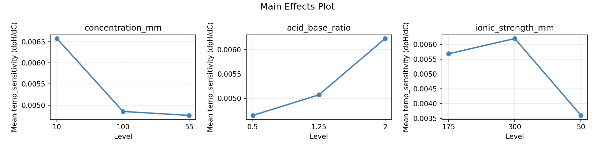
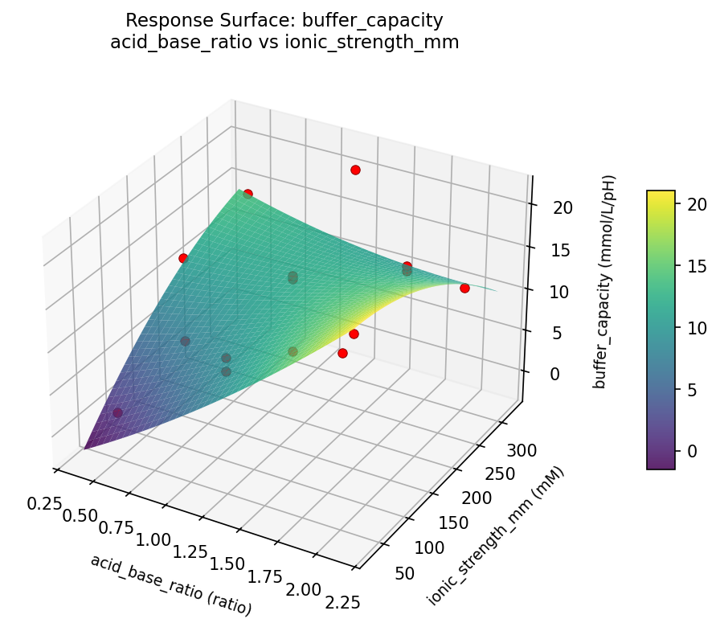
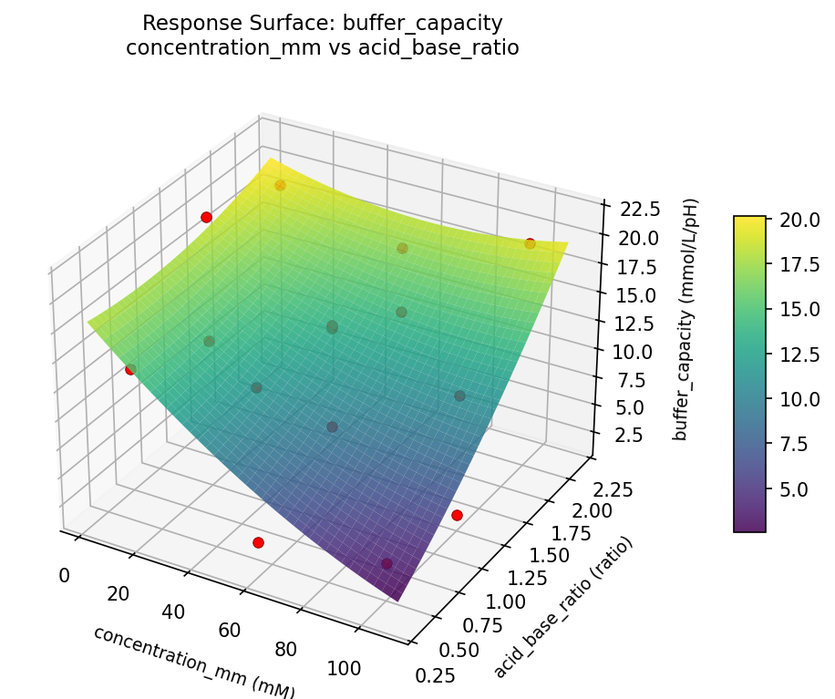
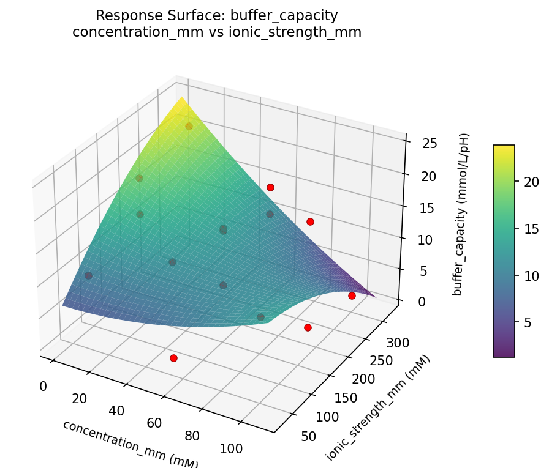
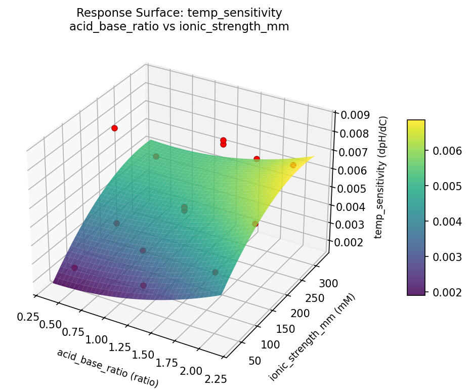
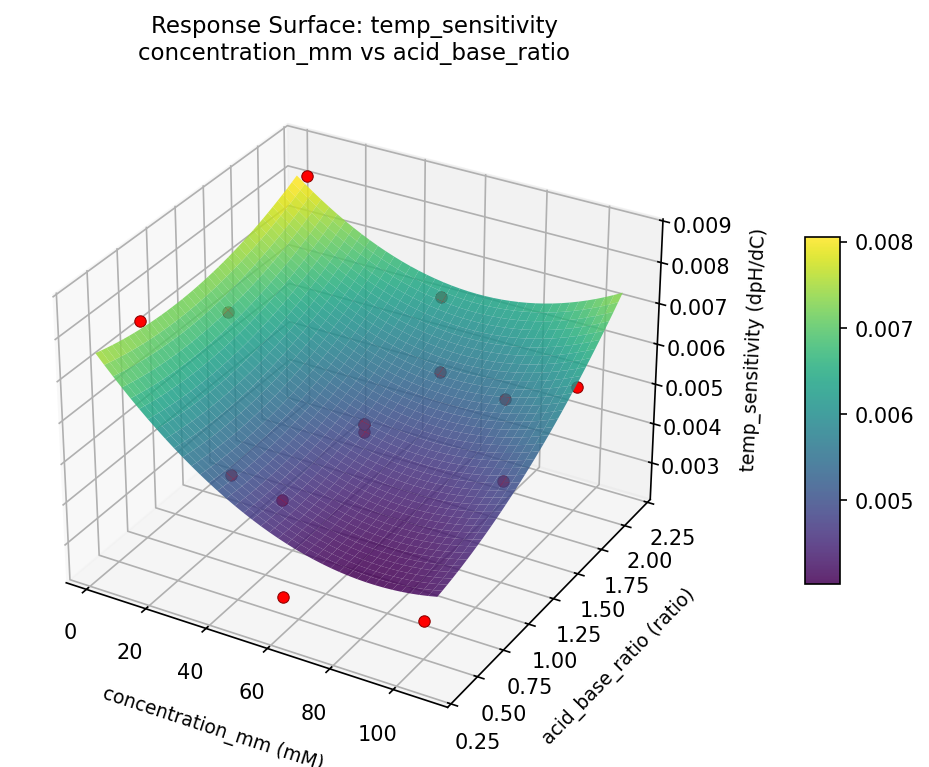
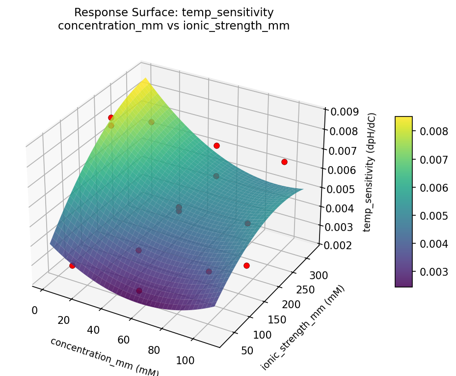

Experimental Setup
Factors
| Factor | Low | High | Unit |
|---|
concentration_mm | 10 | 100 | mM |
acid_base_ratio | 0.5 | 2.0 | ratio |
ionic_strength_mm | 50 | 300 | mM |
Fixed: buffer_system = phosphate, target_ph = 7.4
Responses
| Response | Direction | Unit |
|---|
buffer_capacity | ↑ maximize | mmol/L/pH |
temp_sensitivity | ↓ minimize | dpH/dC |
Configuration
{
"metadata": {
"name": "pH Buffer Preparation",
"description": "Box-Behnken design to maximize buffer capacity and minimize temperature sensitivity by tuning buffer concentration, acid-base ratio, and ionic strength"
},
"factors": [
{
"name": "concentration_mm",
"levels": [
"10",
"100"
],
"type": "continuous",
"unit": "mM"
},
{
"name": "acid_base_ratio",
"levels": [
"0.5",
"2.0"
],
"type": "continuous",
"unit": "ratio"
},
{
"name": "ionic_strength_mm",
"levels": [
"50",
"300"
],
"type": "continuous",
"unit": "mM"
}
],
"fixed_factors": {
"buffer_system": "phosphate",
"target_ph": "7.4"
},
"responses": [
{
"name": "buffer_capacity",
"optimize": "maximize",
"unit": "mmol/L/pH"
},
{
"name": "temp_sensitivity",
"optimize": "minimize",
"unit": "dpH/dC"
}
],
"settings": {
"operation": "box_behnken",
"test_script": "use_cases/191_ph_buffer_prep/sim.sh"
}
}
Experimental Matrix
The Box-Behnken Design produces 15 runs. Each row is one experiment with specific factor settings.
| Run | concentration_mm | acid_base_ratio | ionic_strength_mm |
|---|
| 1 | 55 | 0.5 | 50 |
| 2 | 55 | 1.25 | 175 |
| 3 | 100 | 1.25 | 300 |
| 4 | 100 | 1.25 | 50 |
| 5 | 55 | 1.25 | 175 |
| 6 | 55 | 1.25 | 175 |
| 7 | 10 | 1.25 | 300 |
| 8 | 100 | 0.5 | 175 |
| 9 | 55 | 0.5 | 300 |
| 10 | 100 | 2 | 175 |
| 11 | 10 | 1.25 | 50 |
| 12 | 55 | 2 | 300 |
| 13 | 10 | 0.5 | 175 |
| 14 | 10 | 2 | 175 |
| 15 | 55 | 2 | 50 |
Step-by-Step Workflow
1
Preview the design
$ python doe.py info --config use_cases/191_ph_buffer_prep/config.json
2
Generate the runner script
$ python doe.py generate --config use_cases/191_ph_buffer_prep/config.json \
--output use_cases/191_ph_buffer_prep/results/run.sh --seed 42
3
Execute the experiments
$ bash use_cases/191_ph_buffer_prep/results/run.sh
4
Analyze results
$ python doe.py analyze --config use_cases/191_ph_buffer_prep/config.json
5
Get optimization recommendations
$ python doe.py optimize --config use_cases/191_ph_buffer_prep/config.json
6
Generate the HTML report
$ python doe.py report --config use_cases/191_ph_buffer_prep/config.json \
--output use_cases/191_ph_buffer_prep/results/report.html
Features Exercised
| Feature | Value |
|---|
| Design type | box_behnken |
| Factor types | continuous (all 3) |
| Arg style | double-dash |
| Responses | 2 (buffer_capacity ↑, temp_sensitivity ↓) |
| Total runs | 15 |
Analysis Results
Generated from actual experiment runs using the DOE Helper Tool.
Response: buffer_capacity
Top factors: acid_base_ratio (45.4%), concentration_mm (38.3%), ionic_strength_mm (16.2%).
Pareto Chart

Main Effects Plot

Response: temp_sensitivity
Top factors: ionic_strength_mm (43.4%), concentration_mm (30.3%), acid_base_ratio (26.3%).
Pareto Chart

Main Effects Plot

Response Surface Plots
3D surfaces fitted with quadratic RSM. Red dots are observed data points.
buffer capacity acid base ratio vs ionic strength mm

buffer capacity concentration mm vs acid base ratio

buffer capacity concentration mm vs ionic strength mm

temp sensitivity acid base ratio vs ionic strength mm

temp sensitivity concentration mm vs acid base ratio

temp sensitivity concentration mm vs ionic strength mm

Full Analysis Output
RSM surface: rsm_buffer_capacity_concentration_mm_vs_acid_base_ratio.png
RSM surface: rsm_buffer_capacity_concentration_mm_vs_ionic_strength_mm.png
RSM surface: rsm_buffer_capacity_acid_base_ratio_vs_ionic_strength_mm.png
RSM surface: rsm_temp_sensitivity_concentration_mm_vs_acid_base_ratio.png
RSM surface: rsm_temp_sensitivity_concentration_mm_vs_ionic_strength_mm.png
RSM surface: rsm_temp_sensitivity_acid_base_ratio_vs_ionic_strength_mm.png
=== Main Effects: buffer_capacity ===
Factor Effect Std Error % Contribution
--------------------------------------------------------------
acid_base_ratio 8.1500 1.6507 45.4%
concentration_mm 6.8750 1.6507 38.3%
ionic_strength_mm 2.9143 1.6507 16.2%
=== Summary Statistics: buffer_capacity ===
concentration_mm:
Level N Mean Std Min Max
------------------------------------------------------------
10 4 16.3250 4.9922 10.7000 21.5000
100 4 9.4500 8.3867 1.8000 20.0000
55 7 11.6286 5.5674 1.9000 16.7000
acid_base_ratio:
Level N Mean Std Min Max
------------------------------------------------------------
0.5 4 8.6500 6.8262 1.9000 15.3000
1.25 7 11.8143 6.4157 1.8000 21.5000
2 4 16.8000 4.0620 11.1000 20.0000
ionic_strength_mm:
Level N Mean Std Min Max
------------------------------------------------------------
175 7 13.3143 6.1859 3.7000 20.0000
300 4 12.4250 8.2718 1.8000 21.5000
50 4 10.4000 6.2086 1.9000 16.7000
=== Main Effects: temp_sensitivity ===
Factor Effect Std Error % Contribution
--------------------------------------------------------------
ionic_strength_mm 0.0026 0.0005 43.4%
concentration_mm 0.0018 0.0005 30.3%
acid_base_ratio 0.0016 0.0005 26.3%
=== Summary Statistics: temp_sensitivity ===
concentration_mm:
Level N Mean Std Min Max
------------------------------------------------------------
10 4 0.0066 0.0027 0.0027 0.0086
100 4 0.0049 0.0015 0.0030 0.0066
55 7 0.0048 0.0012 0.0025 0.0065
acid_base_ratio:
Level N Mean Std Min Max
------------------------------------------------------------
0.5 4 0.0047 0.0026 0.0025 0.0082
1.25 7 0.0051 0.0014 0.0027 0.0068
2 4 0.0062 0.0018 0.0046 0.0086
ionic_strength_mm:
Level N Mean Std Min Max
------------------------------------------------------------
175 7 0.0057 0.0020 0.0030 0.0086
300 4 0.0062 0.0009 0.0049 0.0068
50 4 0.0036 0.0012 0.0025 0.0046
Pareto chart (buffer_capacity): use_cases/191_ph_buffer_prep/results/analysis/pareto_buffer_capacity.png
Pareto chart (temp_sensitivity): use_cases/191_ph_buffer_prep/results/analysis/pareto_temp_sensitivity.png
Main effects (buffer_capacity): use_cases/191_ph_buffer_prep/results/analysis/main_effects_buffer_capacity.png
Main effects (temp_sensitivity): use_cases/191_ph_buffer_prep/results/analysis/main_effects_temp_sensitivity.png
Optimization Recommendations
=== Optimization: buffer_capacity ===
Direction: maximize
Best observed run: #3
concentration_mm = 100
acid_base_ratio = 1.25
ionic_strength_mm = 50
Value: 21.5
RSM Model (linear, R² = 0.5263, Adj R² = 0.3971):
Coefficients:
intercept +12.3000
concentration_mm +2.8500
acid_base_ratio +0.3000
ionic_strength_mm -5.4250
RSM Model (quadratic, R² = 0.7927, Adj R² = 0.4195):
Coefficients:
intercept +8.8667
concentration_mm +2.8500
acid_base_ratio +0.3000
ionic_strength_mm -5.4250
concentration_mm*acid_base_ratio -0.0250
concentration_mm*ionic_strength_mm +1.0250
acid_base_ratio*ionic_strength_mm +2.3750
concentration_mm^2 +5.8292
acid_base_ratio^2 +0.3792
ionic_strength_mm^2 +0.2292
Curvature analysis:
concentration_mm coef=+5.8292 convex (has a minimum)
acid_base_ratio coef=+0.3792 convex (has a minimum)
ionic_strength_mm coef=+0.2292 convex (has a minimum)
Notable interactions:
acid_base_ratio*ionic_strength_mm coef=+2.3750 (synergistic)
concentration_mm*ionic_strength_mm coef=+1.0250 (synergistic)
Predicted optimum (from quadratic model):
concentration_mm = 100
acid_base_ratio = 1.25
ionic_strength_mm = 50
Predicted value: 22.1750
Model quality: Good fit — general trends are captured, some noise remains.
Factor importance:
1. ionic_strength_mm (effect: 10.9, contribution: 54.0%)
2. concentration_mm (effect: 8.6, contribution: 43.0%)
3. acid_base_ratio (effect: 0.6, contribution: 3.0%)
=== Optimization: temp_sensitivity ===
Direction: minimize
Best observed run: #13
concentration_mm = 55
acid_base_ratio = 0.5
ionic_strength_mm = 300
Value: 0.0025
RSM Model (linear, R² = 0.3708, Adj R² = 0.1992):
Coefficients:
intercept +0.0053
concentration_mm +0.0010
acid_base_ratio +0.0007
ionic_strength_mm -0.0007
RSM Model (quadratic, R² = 0.8087, Adj R² = 0.4642):
Coefficients:
intercept +0.0071
concentration_mm +0.0010
acid_base_ratio +0.0007
ionic_strength_mm -0.0007
concentration_mm*acid_base_ratio +0.0003
concentration_mm*ionic_strength_mm -0.0005
acid_base_ratio*ionic_strength_mm +0.0003
concentration_mm^2 -0.0002
acid_base_ratio^2 -0.0016
ionic_strength_mm^2 -0.0016
Curvature analysis:
acid_base_ratio coef=-0.0016 negligible curvature
ionic_strength_mm coef=-0.0016 negligible curvature
concentration_mm coef=-0.0002 negligible curvature
Predicted optimum (from quadratic model):
concentration_mm = 100
acid_base_ratio = 1.25
ionic_strength_mm = 50
Predicted value: 0.0076
Model quality: Good fit — general trends are captured, some noise remains.
Factor importance:
1. ionic_strength_mm (effect: 0.0, contribution: 34.3%)
2. acid_base_ratio (effect: 0.0, contribution: 34.3%)
3. concentration_mm (effect: 0.0, contribution: 31.3%)